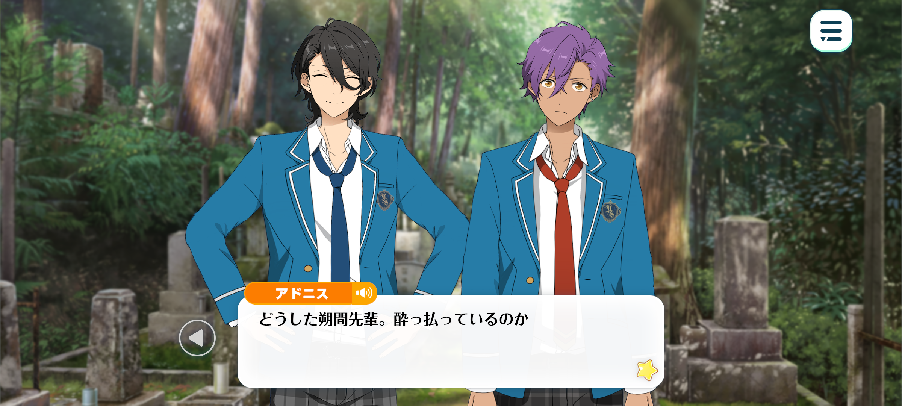
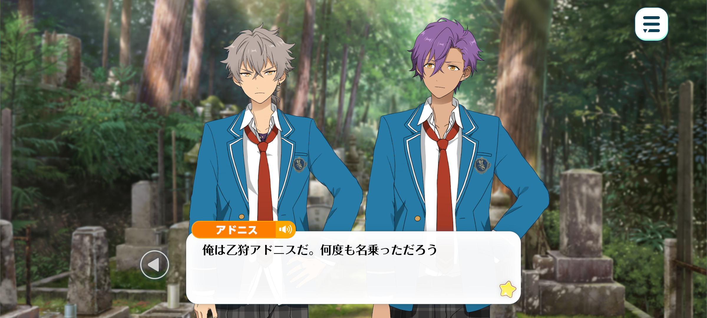

PSYCHOBREAK — Chapter 11



Rei: ~...♪
Adonis: Oh, where did you get that guitar from, Sakuma-senpai?
Rei: From Bouzu’s temple. I remembered I'd left a coupla instruments at his place, so I went over and grabbed 'em.
Koga: What are you two, a couple that just broke up or somethin'?
Rei: That's pretty much what it feels like. Even if we team up again now, I don't reckon we're gonna get back together.
Even if he wanted to, I ain't goin' out with him again.
That's why I'm thinkin' it's time I met some new people~♪
♪～♪～♪
Adonis: Wow... What a lovely song. The melody is rather intense, but listening to it makes me feel strangely at ease.
Amazing, Oogami, and you composed it yourself?
Koga: Oh, uh, yeah... But it only sounds good 'cause of who's playin' it... Any song would sound amazing in Sakuma-senpai's hands.
Rei: Aww, look at him, blushin'! So cute and innocent~. Wish I could be that young and pure again~.
Hmm... So this is what Wanko-chan had in mind when he came up with the name UNDEAD, huh?
Just like Adonis-kun, he'd picked up on the fact that I'd been feelin' down, even if he hadn't quite realised it himself... He wanted me to get my youth back. To come alive again.
Man, I could almost cry... This song's gettin' me right in my tired, withered heart.
There's somethin' I've been cravin' all this time.
And now... I feel strangely content.
This is what I've wanted more than anything. More than havin' millions of people shower me with praise.
Someone's pure, heartfelt feelings...
♪～♪～♪

Kaoru: Hey~ You lot look pretty cheerful. Something happened?
Rei: Yo, Hakaze-kun. Cuttin’ it a bit fine, aren't ya?
I was startin' to think you weren't gonna show.
Kaoru: Hey, well, I'm here now, aren't I...? I'm the one who asked you to deal with the "vampires", so I suppose it's my job to keep an eye on you and make sure you don't slack off before it's all over, right?
Though I never expected to get dragged into some weird group myself. What was it called again...? UNDEAD?
Rei: You're an aspiring idol at Yumenosaki too, right? You'll be a big help to us.
Kaoru: Don't expect too much from me, 'kay? I'm pretty well known for skiving off school.
Still, I suppose I can make a bit of an effort this time. If it's to protect my workplace, my place to belong, then I guess I oughta do at least a little work too. Bit of a pain, though~♪
Anyway, to get everyone hyped up for tomorrow's showdown, I've put together some promotional flyers.
Handing 'em out should be a piece of cake for Mr Worldwide Sakuma-san, so you lot make sure you pull your weight too, 'kay?
I've even prepared a proper stage for you. Well, I say it was me, but the shopkeepers in the entertainment district who've been having trouble with the "vampires" helped out a lot.
I would've liked to get some special outfits made for you too, but I don't know your measurements, and there just wasn't enough time to have them sewn.
Rei: Don’t worry ‘bout it.
Our opponents probably won't have made any special preparations, so I reckon we'd look better performin' in our school uniforms, just like ordinary students.
Seems fairer that way, if we're all on a similar footing.
Koga: Hm... So you weren't late 'cause you didn't wanna come. You were late 'cause you were busy makin' preparations?
Guess I was wrong about you, Hakaze...senpai. You do get the job done in the end.
Kaoru: That’s right! I’m a reliable guy~, really, really ♪
Koga: Yeah. You seem pretty laidback on the surface but you’re actually pretty hardworkin’.
Adonis: Umu. He's been a great help, taking care of all the things we hadn't thought to account for.
Kaoru: But honestly, I don't feel like I've done nearly enough. I've got the stage all sorted, but aren't we seriously short on rehearsal time?
The showdown with the "vampires" is tomorrow, right? Doesn't that mean we're practically going onstage without having rehearsed?
Rei: That's why we're here, so we can practise. Our unit's only just come together, and we've barely had a chance to get to know each other. So this is a good opportunity for that, too.
Adonis: Though I'd say it's more of a reorganisation than a formation.
Rei: Ahaha. It's funny how Adonis-kun, who's the least familiar with Japanese out of all of us, is the most particular about his choice of words.
Adonis: Words are important.
Rei: Yuuup. In this country, we've got this thing called kotodama, the spiritual power of words. That's what a close friend of mine, who passed away not too long ago, used to say—
Koga: Hasumi-senpai said that, but he ain't dead...
Even though he's supposed to be takin' a behind-the-scenes role, he's been more enthusiastic about this than the rest of us. He even talked his parents into lettin' us use this place for rehearsals, without us even havin' to ask him to.
Kaoru: He didn't have to go to all that trouble, though. We could've just practised at the livehouse.
Rei: Ah, well. The weather's nice, and singin' out in the sunshine feels great, doesn't it?
We're about to take down some "vampires", after all. Let's soak up their weakness with our whole bodies and store it up!
♪～♪～♪
Kaoru: I-is this really gonna be okay~? You're makin' all these big, optimistic declarations, but is there any guarantee we'll actually be able to get rid of those guys?
Rei: Hey, even I can’t predict the future.
But, somehow, I've got this weird feelin' that everything's gonna work out. It's like someone's inside me, goin', "Indeed, you're quite right," in the voice of some old geezer.
Kaoru: Someone inside you? What? Are you drunk?
Adonis: I asked him that earlier.
Rei: I'm a hundred per cent sober. We can't beat the delinquents if I'm pissed, and drinkin' underage is illegal anyway. Can't fight fire with fire, y'know?
Without sinkin' to their level, we'll become the sun and burn away all the wickedness festering across the earth.
Trust me. I'm feelin' weirdly good, so I'll give it everything I've got tomorrow.
Can’t promise after that, but I promise tomorrow.
♪～♪～♪